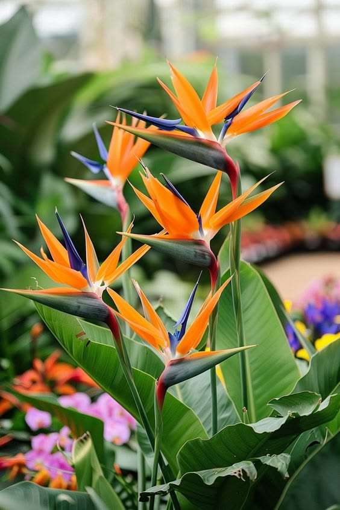
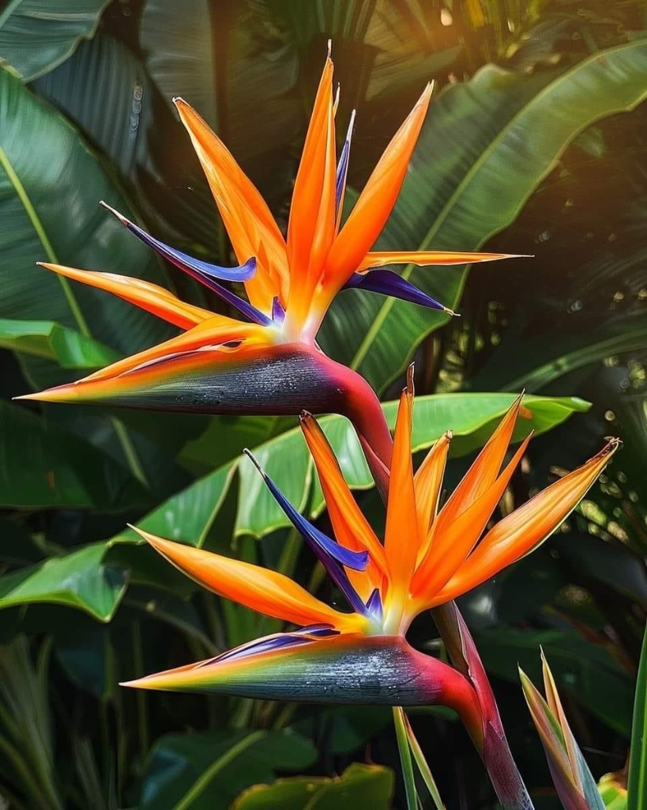
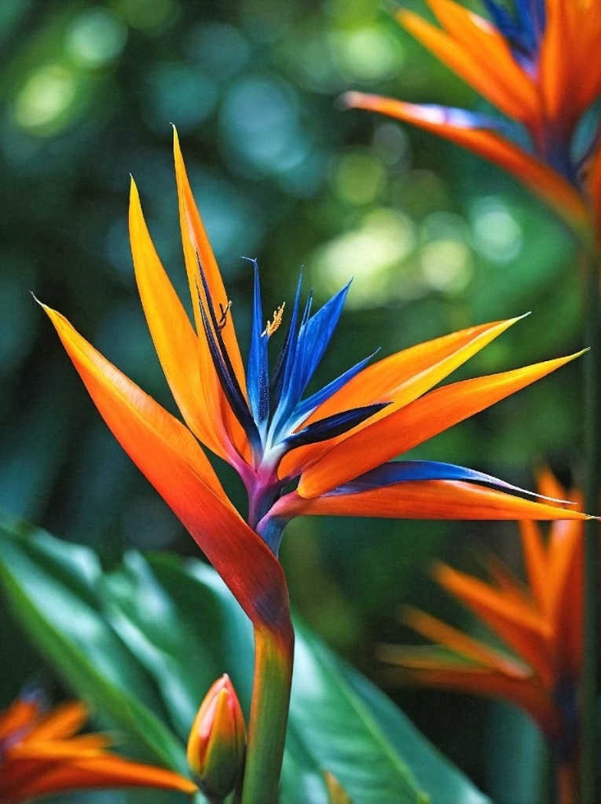

Dylan's Nature Library
A Student's Tribute to the Wonders of Nature
Photo Gallery

Vibrant Display

Natural Beauty

Perfect Bloom
The Symbolism of the Bird of Paradise
The Bird of Paradise carries powerful archetypal and emotional symbolism due to its striking appearance. Because its brilliant orange sepals and deep-blue petals closely resemble wings captured mid-flight, it represents the ultimate desire for freedom, transcendence, and soaring beyond earthly limits. It is a bold, unmistakable flower that stands as a symbol of extravagance, uniqueness, and celebrating your true individual identity. Paradoxically, while looking like an avian creature ready to fly away, its root system is incredibly deep and sturdy. This gives the flower a dual meaning of grounded optimism, demonstrating that true freedom requires strong roots.
Why the Bird of Paradise Symbolizes Dylan: The Bird of Paradise serves as a profound personal symbol for Dylan, perfectly capturing an unyielding desire for freedom and an intense drive for success. Just like the exotic blossom mimics a tropical bird breaking free from its cage to soar into the open sky, Dylan embodies a spirit of absolute independence and unshackled liberation—refusing to be confined by limits or societal expectations. The flower's bold, unforgettable shape does not ask for permission to be vibrant; it simply commands attention by existing naturally, mirroring Dylan's unapologetic pursuit of greatness. Its deep, strong root system provides the ultimate foundation for this ambition, proving that true success requires being firmly grounded while having the courage to stretch outward and conquer new heights.
Freedom and Transcendence
The flower's wing-like petals symbolize the soul's journey toward spiritual enlightenment and the pursuit of one's dreams. It represents breaking free from limitations and embracing the freedom to be oneself.
Individuality and Uniqueness
Standing out with its distinctive appearance, the Bird of Paradise celebrates individuality and the courage to be different. It reminds us that our unique qualities are what make us beautiful and extraordinary.
Grounded Optimism
The paradox of its appearance—wings ready to fly, yet deeply rooted—teaches us that true freedom requires a strong foundation. We can soar to great heights while remaining grounded in our values and principles.
The Scientific Origins and Naming of the Flower
The scientific categorization of the Bird of Paradise reflects a mix of eighteenth-century European royalty and precise structural traits. Belonging to the family Strelitziaceae, a small family of monocotyledonous flowering plants closely related to banana plants, its primary and most celebrated species is officially named Strelitzia reginae. The genus was designated in 1773 by the British botanist Sir Joseph Banks to honor Queen Charlotte of Great Britain, who was born a Duchess of Mecklenburg-Strelitz. Meanwhile, the species name reginae translates directly from Latin to mean "of the queen," doubling down on its royal namesake and reflecting the majestic appearance of the plant.
Botanical Classification
Family: Strelitziaceae
Genus: Strelitzia
Species: Strelitzia reginae
Common Names: Bird of Paradise, Crane Flower, Strelitzia
Taxonomic Classification
- Kingdom: Plantae
- Clade: Tracheophytes (vascular plants)
- Clade: Angiosperms (flowering plants)
- Clade: Monocots
- Order: Zingiberales
- Family: Strelitziaceae
Related Species
The Strelitzia genus includes five species, with Strelitzia reginae being the most well-known. Other species include Strelitzia nicolai (White Bird of Paradise), Strelitzia juncea (Reed-leaved Strelitzia), and Strelitzia caudata (Mountain Strelitzia).
Global Significance across Countries
The Bird of Paradise holds deep cultural value across several major nations, starting with its native homeland of South Africa. Growing wild along the coastal bush and riverbanks of the Eastern Cape, it is known locally as the "Crane Flower" and is deeply woven into South African culture to symbolize nobility and freedom, even being featured on the country's fifty-cent coin. In 1773, the plant was introduced to the United Kingdom by botanist Francis Masson, where it quickly became a symbol of Victorian high society and empirical discovery under the patronage of the British Royal Family. Across the Atlantic, the flower found another home in the United States, where it was adopted as the official floral emblem of Los Angeles, California, perfectly embodying the city's identity of glitz, success, and bold individual expression.
South Africa: The Native Homeland
As the indigenous home of the Bird of Paradise, South Africa holds the flower in special regard. The "Crane Flower" appears in traditional artwork, ceremonial decorations, and even on currency, representing the nation's natural beauty and spirit of freedom.
United Kingdom: Royal Patronage
Under the patronage of Queen Charlotte and through the work of botanists like Francis Masson and Sir Joseph Banks, the Bird of Paradise became a prized specimen in British royal gardens and a symbol of botanical exploration during the Victorian era.
United States: The Los Angeles Emblem
Adopted as the official flower of Los Angeles in 1952, the Bird of Paradise perfectly captures the city's essence—bold, vibrant, and unapologetically glamorous. It represents the California dream of success, individuality, and the pursuit of excellence.
Stories and Cultural Significance
The Myth of the Legless Bird
When European explorers first encountered the actual Birds of Paradise animals in New Guinea, native tribes traded the trade-skins with the feet removed. This led to a widespread European myth that these birds were heavenly creatures who had no legs, remaining permanently airborne and sustained solely by the hand of God. When the South African Strelitzia flower was discovered decades later, its uncanny match to those legendary, footless birds from paradise forever linked the plant to the concept of divine perfection, untamed skies, and a holy origin.
The Sunbird's Secret Handshake
Outside of its native habitat, the Bird of Paradise rarely reproduces naturally without human intervention. In the wild, however, it has an exclusive partnership with Sunbirds. The bird must physically land on the blue arrowhead petals of the flower. The exact weight of the bird acts as a mechanical key, opening up a hidden nectar chamber that spills pollen directly onto the bird's feet. As the bird hops to the next plant, it acts as a precise living vector, creating a beautiful story of biological co-dependence and natural harmony.
The Legend of the Bird of Paradise
According to a beautiful South African legend, the Bird of Paradise flower was created from the spirit of a beautiful princess who was transformed into a bird. The princess, known for her grace and beauty, was so admired that the gods granted her wish to fly free like a bird. As she took flight, her dress transformed into the magnificent orange and blue petals we see today, forever frozen in the moment of her transformation.
Cultural Importance in South Africa
In its native South Africa, the Bird of Paradise holds deep cultural significance. It appears in traditional Zulu and Xhosa artwork and is often used in ceremonial decorations. The flower is seen as a symbol of the beauty and diversity of South African flora.
The Crane Flower Connection
The flower's alternate name, "Crane Flower," comes from its resemblance to the crowned crane, a bird native to Africa. In some African cultures, the crane is considered a symbol of royalty and elegance, further enhancing the flower's regal associations.
Artistic Inspiration
The Bird of Paradise has inspired countless artists, designers, and architects. Its unique structure has influenced Art Deco designs, textile patterns, and even architectural elements. The flower's dramatic silhouette appears in everything from wallpaper designs to jewelry, cementing its place in the world of art and design.
Hollywood and Pop Culture
The flower has made numerous appearances in films and television, often used to symbolize exotic locations or tropical paradises. Its distinctive appearance makes it instantly recognizable, even to those who have never seen it in person.
A Symbol of Hope
In modern times, the Bird of Paradise has become a symbol of hope and resilience. Its ability to thrive in various conditions and return year after year serves as a reminder that beauty can persist even in challenging circumstances. This message of hope resonates with people around the world, making the flower not just a beautiful plant, but a meaningful symbol in human culture.